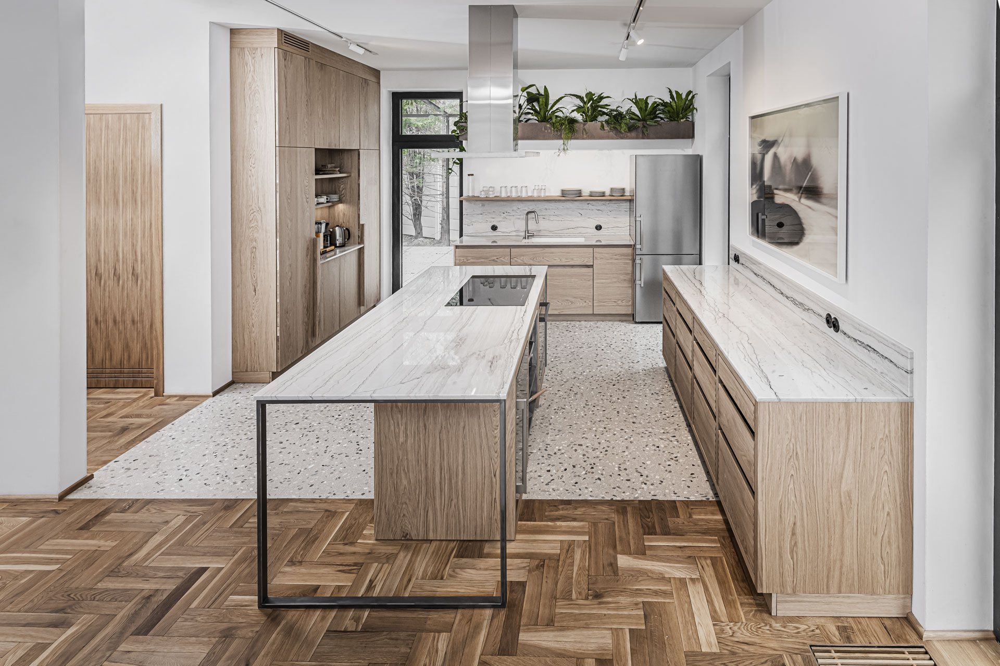
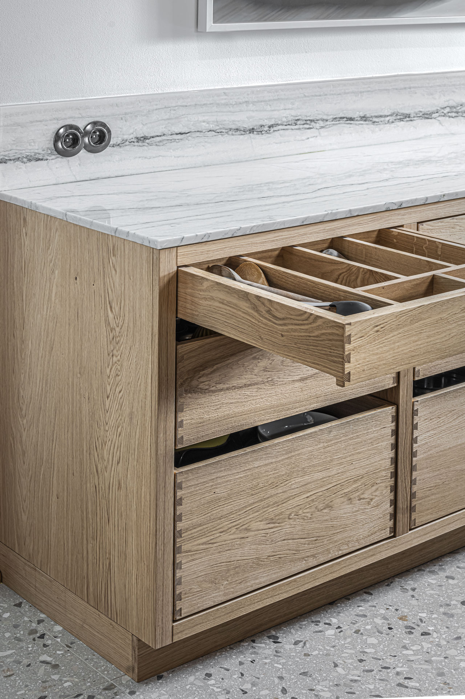
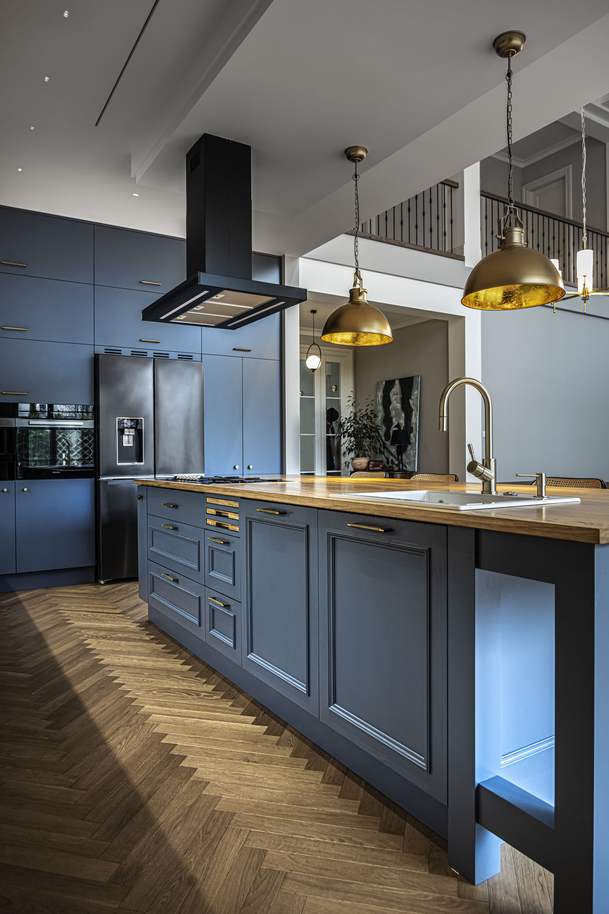
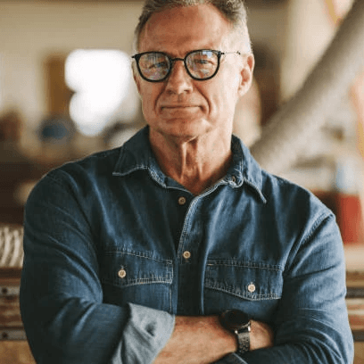

Naturalność jest nowym luksusem
Wierzymy, że zdrowy dom powstaje z naturalnych materiałów, które są ponadczasowe i z biegiem lat nabierają charakteru. Dlatego jako manufaktura od ponad 30 lat projektujemy i realizujemy kuchnie na wymiar w całości wykonane z litego drewna.


Nasza praca zaczyna się od wyboru surowych pni drzew z pobliskich lasów, które następnie sami tniemy i sezonujemy. To jedyny sposób, by mieć absolutną kontrolę nad tym, co trafi do Twojego wnętrza. Dzięki temu zyskujesz nie tylko zdrowy mikroklimat w domu, ale i techniczną gwarancję, że kuchnia pozostanie stabilna przez dekady.
Eksperci od drewna

Jako architekci w Hul dbamy, aby proces projektowania i realizacji kuchni przebiegał w pełnym spokoju. Bierzemy odpowiedzialność za stronę wizualną i użytkową wizji, ale przede wszystkim zapewniamy wsparcie w decyzjach, których wymaga każdy remont.
Doświadczenie naszych stolarzy i nowoczesny park maszynowy to część sukcesu. Fundamentem jest samo drewno, dlatego osobiście doglądam go w suszarni. Ten wielotygodniowy proces decyduje o tym, czy kuchnia przetrwa dekady.

Zaczynamy od drewna i od rozmowy
Poznanie się
Możesz odwiedzić nasze studio w Galerii Wnętrz Domar, zadzwonić lub wysłać wiadomość e-mail. Rozmawiamy o Twoim domu, potrzebach i wizji idealnej kuchni. Na tej podstawie przedstawiamy możliwe kierunki projektu oraz zakres realizacji, aby upewnić się, że nasz sposób tworzenia wnętrz w pełni wpisuje się w Twoje oczekiwania.
Projekt i dopracowanie wizji
Podczas spotkania w Twoim domu nasz architekt wykonuje dokładne pomiary, które stają się bazą do przygotowania projektu i pierwszych wizualizacji. W uważnym procesie dopracowujemy układ, materiały oraz detale. Dbamy o każdy aspekt techniczny, od rozplanowania instalacji po dobór odpowiednich sprzętów. Nasz zespół prowadzi Cię przez każdą decyzję, dbając o spójność i ponadczasowy charakter całej koncepcji.
Dokumentacja konstrukcyjna
Gdy projekt jest dopracowany, przygotowujemy szczegółową dokumentację techniczną. Architekci współpracują bezpośrednio ze stolarzami, aby każdy element został dokładnie zaplanowany. Powstają precyzyjne rysunki konstrukcyjne, które prowadzą dalsze etapy realizacji.
Praca stolarska
Przygotowane wcześniej drewno zmienia się w Twoją kuchnię. Łączymy precyzję nowoczesnych maszyn CNC z wyczuciem pracy ręcznej, dobierając odpowiednią metodę do charakteru każdego elementu. Dzięki temu możemy osiągnąć trwałość i dokładność niezależnie od stylu kuchni. Na tym etapie koordynujemy również prace z zaprzyjaźnionymi manufakturami, które przygotowują dla nas dedykowane elementy z metalu oraz minerałów.
Montaż w Twoim domu
Nasz zespół przyjeżdża na miejsce i instaluje wszystkie elementy kuchni. Precyzyjnie regulujemy mechanizmy i dopracowujemy detale wykończenia, przekazując Ci kuchnię w pełni gotową do codziennego użytkowania.
Często zadawane pytania
Działamy wszędzie tam, gdzie powstają wyjątkowe wnętrza. W naszym portfolio mamy już ponad 400 kuchni na wymiar zrealizowanych w całej Europie. Regularnie odwiedzamy miasta takie jak Warszawa, Wrocław, Poznań, Kraków czy Trójmiasto, ale nasz zespół dociera w każdy zakątek Polski. Realizujemy także projekty zagraniczne, tworząc kuchnie z drewna w Niemczech oraz w krajach skandynawskich.
Naszą ekspertyzą jest realizacja kuchni na wymiar z litego drewna. Bardzo często do projektów podchodzimy jednak holistycznie. Jeśli tworzymy dla Ciebie kuchnię, możemy zadbać również o drewniane meble do spiżarni, garderoby, łazienki czy domowej biblioteki. Pozwala to zachować spójny charakter całego wnętrza, jednak naszą współpracę zawsze zaczynamy od projektu kuchni.
Choć „kuchnie trendy 2026” to jedno z najczęściej wyszukiwanych haseł, w Hul wierzymy, że wyjątkowa kuchnia powinna stać ponad modą. Trendy to świetna inspiracja, żeby sprawdzić co nam się podoba, jednak projektując z litego drewna patrzymy dekady do przodu. Zależy nam na tym, aby Twoje wnętrze zachwycało swoją ponadczasowością, zamiast zdradzać, że powstało w roku konkretnej mody. Właśnie dlatego stawiamy na naturalne materiały i ponadczasowe formy, które dojrzewają razem z Twoim domem.
Drewno kupujemy od lokalnych nadleśnictw z Dolnego Śląska. Korzystamy wyłącznie z ekologicznego surowca pozyskiwanego w sposób zrównoważony, co potwierdza certyfikat PEFC. Oznacza to, że gospodarka leśna w naszym regionie jest planowana tak, aby lasów stale przybywało. Środki ze sprzedaży drewna pozwalają leśnikom dbać o nowe nasadzenia i ochronę przyrody, dzięki czemu cykl życia lasu zostaje zachowany.
Spotkajmy się we Wrocławiu
Galeria Wnętrz DOMAR · poziom 1
ul. Braniborska 1453-680 Wrocław
Zobacz naturalne materiały z bliska i porozmawiajmy o kuchni dopasowanej do rytmu Twojego domu.
Wyznacz trasę do studia Hul w Google Maps (otwiera nową kartę)